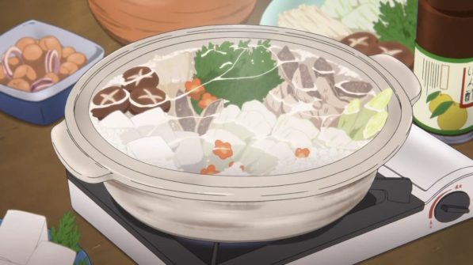

About the recipe:
Chicken nabe is pretty simple to make, though it does require a bit of prep work and some specific equipment… namely a portable burner and a low rimmed pot. While nabe is generally cooked in a clay or cast iron pot, any low rimmed pot that is only about 4 inches deep will work well too. It’s important to not use a very deep pot because the tall rim will obstruct your view of the pot’s contents while sitting at the table, making reaching for the cooked food difficult.
Because chicken nabe is a “one pot dish”, where all the vegetables and meat you need are included in the meal, there’s no need to make side dishes or anything to go along with the nabe, except for a little rice, if desired! This makes nabe a simple to make meal that is really perfect for a family or group dinner. That said, since everything is cooked at the table, it’s important to prepare all of your ingredients before hand so that you’re not scrambling to cook and cut vegetables while trying to enjoy your meal.
Ingredients:
- Dashi stock (chicken stock could also be used)
- 1 large piece of konbu
- 4 – 6 skinless, boneless chicken thighs
- 1 napa cabbage
- 1 bunch of chrysanthemum greens, or any leafy green such as spinach, bok choy, or Chinese broccoli
- 2 Japanese green onions, or 6 regular green onions
- 8 fresh shiitake mushrooms, or 1 portobello
- 1 bunch of enoki mushrooms
- 1 block of yakidofu (broiled tofu), or soft or firm tofu
- 2 packs of fresh or frozen udon noodles, precooked
Condiments:
- Soy sauce
- Ponzu sauce
Directions:
- Fill a low rimmed pot with about 2 inches of dashi stock. Add the konbu and let sit at room temperature for at least an hour, or up to 8 hours or overnight.
-
Prepare your ingredients in the following manner, and set them aside until ready to cook:
Chicken: Rinse, pat dry, and remove excess fat. Cut into 1.5 inch pieces.
Napa cabbage: Separate the leaves, wash in cold water, and slice crosswise into 1 inch pieces.
Chrysanthemum greens (or any leafy greens): Wash and cut into 2 inch pieces.
Japanese green onions: Wash and slice the white parts at a diagonal into 1/4 inch pieces.
Shiitake mushrooms: Wipe clean with a damp paper towel. Cut off the tough or woody ends of the stems, if necessary. Cut an X pattern at the center of the mushroom cap, if desired (this step is pure aesthetic). If using a portobello mushroom, cut into 1/4 inch slices.
Enoki mushrooms: Cut off the dried bottom portion and separate mushrooms into several small clumps.
Tofu: Drain of any liquid and cut into 1.5 inch cubes.
-
Bring the pot of dashi stock and konbu to a boil on a portable burner placed at the center of the dining table. Add a portion of the chicken, cabbage, green onions, and tofu to the pot, keeping the items separated from each other and grouped together with their respective types.
Return pot to a simmer, turning the ingredients every so often to ensure the uppermost items are cooked evenly.
-
Add leafy greens and mushrooms, and continue cooking until the chicken is cooked through and the napa cabbage is soft, about 5 – 8 minutes.
Serve by removing desired items from the pot and placing into a small bowl. Pour ponzu or soy sauce over the items (or dip items individually in sauce).
When the majority of the items in the pot have been removed, another serving of vegetables and meat can be added. Place the ingredients in groups in the broth and simmer as before until cooked through.
Add udon to the empty pot at the end of the meal, cooking the noodles as per the instructions on the package.